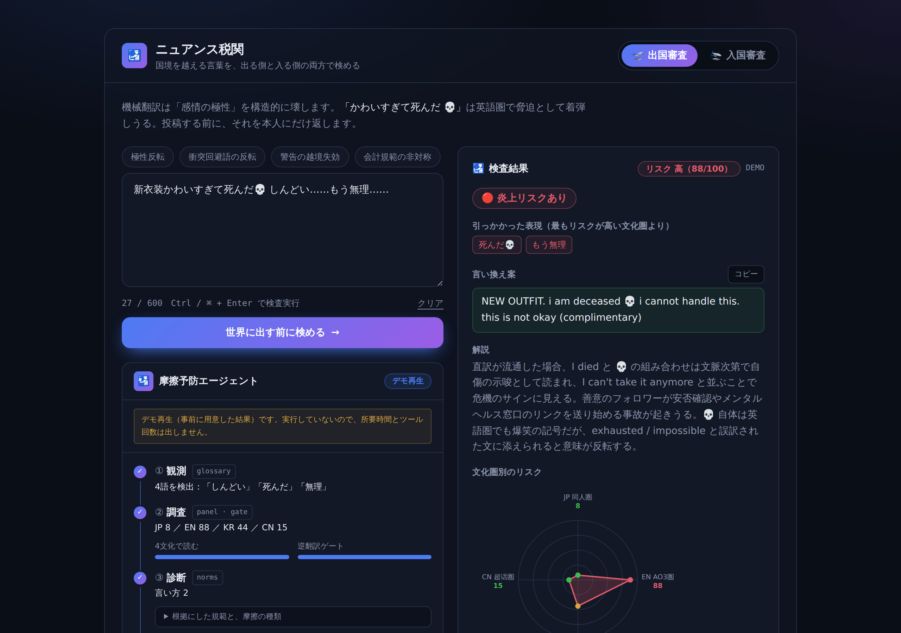
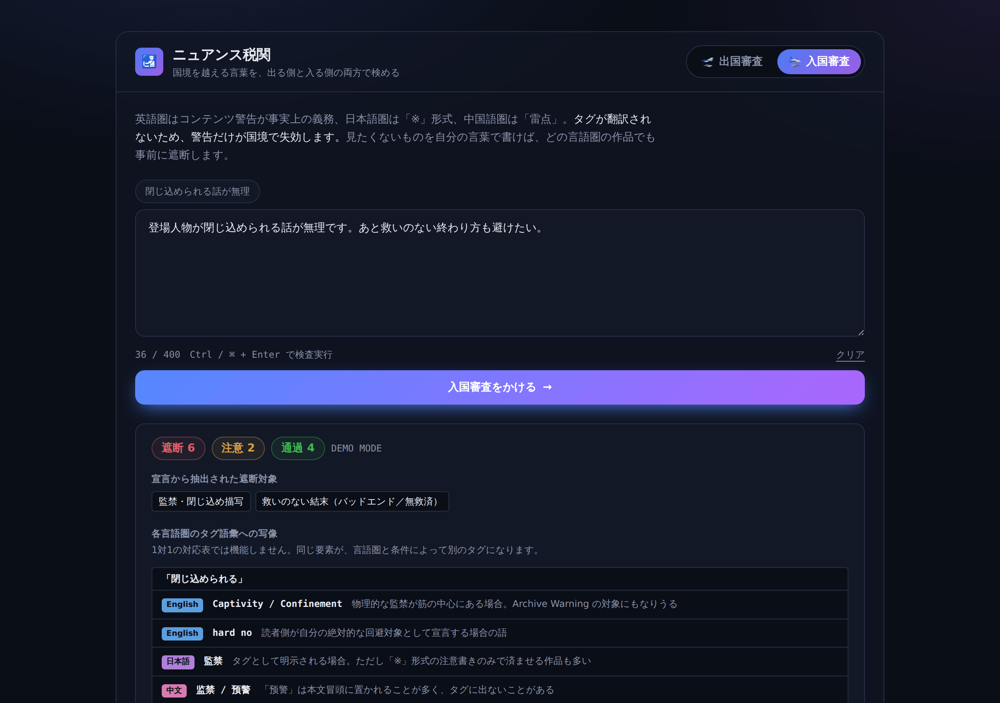

出国審査
OUTBOUND ／ 発信前チェック投稿しようとしている一文が、4つの文化圏でどう受け取られるかを投稿前に予測します。
- 入力
- 投稿予定の文章（600字まで）
- 出力
- 文化圏ごとの誤読リスク（0〜100）、引っかかった表現、その理由、言い換え案
- 対象
- 日本の同人圏／英語圏 AO3・Tumblr／韓国のファンカフェ／中国の微博

ファンの言葉が、国境で事故を起こさないように
国境を越える言葉を、出ていく前と入ってくる前の両方で検めるAIツールです。機械翻訳では伝わらない「気持ちの向き」と「注意書き」を守ります。
日本のアニメや漫画は、かつてない規模で海外に届いています。ファン同士の交流も国境を越え、翻訳ツールを通して毎日やりとりされています。
ところがファンの言葉には、強い否定語で最大級の肯定を表す独特の言い回しが多くあります。「しんどい」「無理」「死んだ」は、ファンの間では「最高すぎる」という意味です。機械翻訳は単語の意味を訳すため、この逆転を拾えません。
この結果、2種類の被害が起きます。ひとつは誤解による国際的な炎上。書いた本人は褒めたつもりなので、何が悪かったのか分かりません。もうひとつは警告が届かないことによる精神的な被害です。英語圏では作品に苦手要素の警告タグを付けるのが事実上のルールですが、日本語圏は「※」の注意書き、中国語圏は「雷点」と作法が違います。翻訳を通ると警告だけが抜け落ち、読者は避けたかった内容を踏んでしまいます。
空港の税関になぞらえ、言葉が出ていくときと入ってくるときの2か所に検査を置きました。どちらもWebアプリの1画面で、タブで切り替えて使います。
投稿しようとしている一文が、4つの文化圏でどう受け取られるかを投稿前に予測します。

見たくない内容を自分の言葉で書くだけで、どの言語で書かれた作品でも事前に隠します。

同じ一文でも、文化圏によって判定が大きく割れます。下はデモの実際の判定値です（リスクが高いほど誤読されやすい）。
出典：lib/demo.ts のプリセット「極性反転」。緑＝そのまま投稿してよい、黄＝注意、赤＝誤読の恐れが高い。
出国審査では、2種類のAI処理を同時に走らせ、最後に安全側へ倒す判定を加えます。
4文化 × 12項目の「その文化圏で当たり前の読み方」を書いた知識集。このプロダクトの中核の資産です。文化圏の追加はカードを書き足すだけで済みます。
lib/norms.ts「しんどい」「無理」「死ぬ」「草」「💀」は最上級の肯定であり得る、とAIに先に検討させる独立ルール。これがないとAIも直訳と同じ誤解をします。
POLARITY_GUARD ／ lib/prompts.ts35語のファンダム用語集から、文中に実際に出てきた語だけをAIに渡します。全部渡すと関係ない語に引きずられて判定が乱れるためです。
lib/glossary.ts「地雷」は文脈によって英語圏の squick、NOTP、hard no のどれにもなります。入国審査は自然文を各言語のタグに1対多で変換し、架空作品12件のタグとあらすじに照らして判定します。
lib/filter.ts ／ lib/works.ts入国審査で「閉じ込められる話が苦手」と書いた人を守るには、下の作品をすべて見つける必要があります。ところが、宣言と作品の表記の間には共通する文字が一つもありません。
出国審査も同じです。「無理」は文脈によって最上級の褒め言葉にも、本当の拒絶にもなります。辞書に「無理＝ポジティブ」と書いても、この文ではどちらなのかは書けません。
このため、ルールで代替できない処理だけをAIに任せる設計にしました。AIを取り除くと、このプロダクトには何も残りません。
「精度が高い」と言うだけでは確かめようがないため、正解付きのテスト問題（出国審査20件、入国審査8件）と、比較用の従来手法を用意しました。比較対象は、わざと有利になるように強めに作っています。
全文検索を加えても見逃しは少ししか減らず、代わりに過剰遮断が3倍に増えます。ニュアンス税関の実モデルでの計測は、APIキーを設定すれば npm run eval:live の1コマンドで実行できる状態で、現時点では未計測です。
出国審査側では、テスト16件のうち5件が用語集に一度もヒットしませんでした。ルールだけでは判定の手がかりがゼロになるケースです。
1つの「正答率」にまとめていないのは、失敗の種類ごとに被害の重さが違うためです。見逃しは読者に実害が出ますが、過剰遮断は解除すれば読めます。さらに、何も問題のない文章（対照群）も混ぜ、「全部危険と答えれば満点」になる抜け道を塞いでいます。
| 主張 | 状況 | 確かめ方 |
|---|---|---|
| 単語一致の方法は大半を見逃す | 実測済み | npm run eval（APIキー不要） |
| ルールだけでは手がかりがゼロのケースがある | 実測済み | 同上 |
| 失敗時に安全側へ倒れる仕組みが動く | テスト済み | npm test（14件） |
| 実際のAIが比較手法を上回る | 未計測 | npm run eval:live |
| 実際のファンに役立つ | 未検証 | ユーザーテスト未実施 |
判定を返すのは書いた本人にだけ。どうするかは本人が決めます。返すのは判決ではなく「どう届きそうか」の予測です。
制御文字の除去では、絵文字をつなぐ特殊文字（ZWJ）だけは残しています。消すと 💀 などの絵文字が壊れ、絵文字の読み取りが核心であるこの製品では致命的になるためです。
また、AIが題材の過激さを理由に回答を拒否して止まる事態に備え、①「分類が目的で生成はしない」と明示する、②拒否されたら別ベンダーのモデルへ自動で切り替える、③それでもだめなら4文化を1つずつ分けて再試行する、という3段の備えを入れています。
ハッカソンのテーマは「推し活 × 国境：ファンダムの熱量は、無血の動員力になるか」。いきなり作り始めず、まず10体のAIエージェントに別々の視点（ファン心理、国境実務、非暴力運動論、実装の現実性、反対意見役など）を割り当ててアイデアを出させました。
| 候補 | 推しを外すと | AIを外すと |
|---|---|---|
| 翻訳義勇軍（多言語防災） | ✕ 普通の翻訳ツールとして成立 | ○ 何も残らない |
| 聖地の作法 | ○ 聖地が消える | ✕ AIなしで成立 |
| 推し活パリティ ／ OshiAid | ○ 成立しない | ✕ もともとAI不要 |
| ニュアンス税関 | ○ 知識資産がゼロになる | ○ 何も残らない |
テーマへの答え方。調査では、ファンの熱量が動員に変わるには5つの条件が要ると整理しました。旗印になる推し、応援の作法、成果が見える数字の3つは国境を越えても壊れません。壊れるのは「言語を越えて中継する橋」と「推しの名を汚さないという自制」の2つだけです。入国審査が橋を、出国審査が自制を支えます。
「無血」が破れるのは、たいてい誰かが攻撃を意図したときではなく、熱量が誤訳されて届いたときです。このツールは動員を起こしたり煽ったりはしません。その前提となる橋と自制を整えることに徹しています。
処理ごとに向いたモデルを使い分けています。判定の核には高性能なモデルを、毎回並行して走る機械的な処理には安価で速いモデルを割り当て、環境変数だけで差し替えられます。
| 処理 | 役割 | 既定のモデル |
|---|---|---|
| panel | 4文化ペルソナによる判定（プロダクトの核） | anthropic/claude-sonnet-5 |
| gate | 訳し戻しによる検算 | google/gemini-2.5-flash |
| filter | 入国審査のタグ変換と遮断判定 | google/gemini-2.5-flash |
既知の制約。用語集は35語、文化規範カードは4文化×12項目の初期版です。入国審査の作品データは、実在サイトのデータを規約上収集できないため、言語ごとのタグ文化の違いを再現した架空作品12件で構成しています。APIキーがない場合はデモモードになり、用意した例文（出国4例、入国1例）だけを判定します。